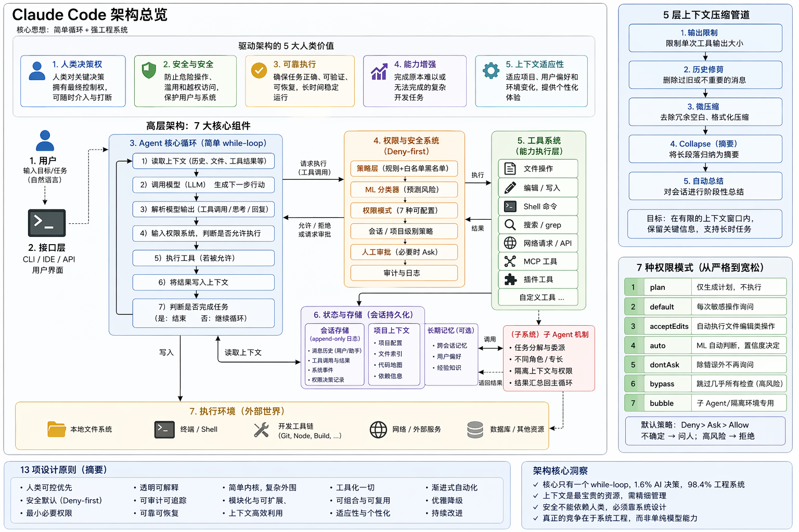
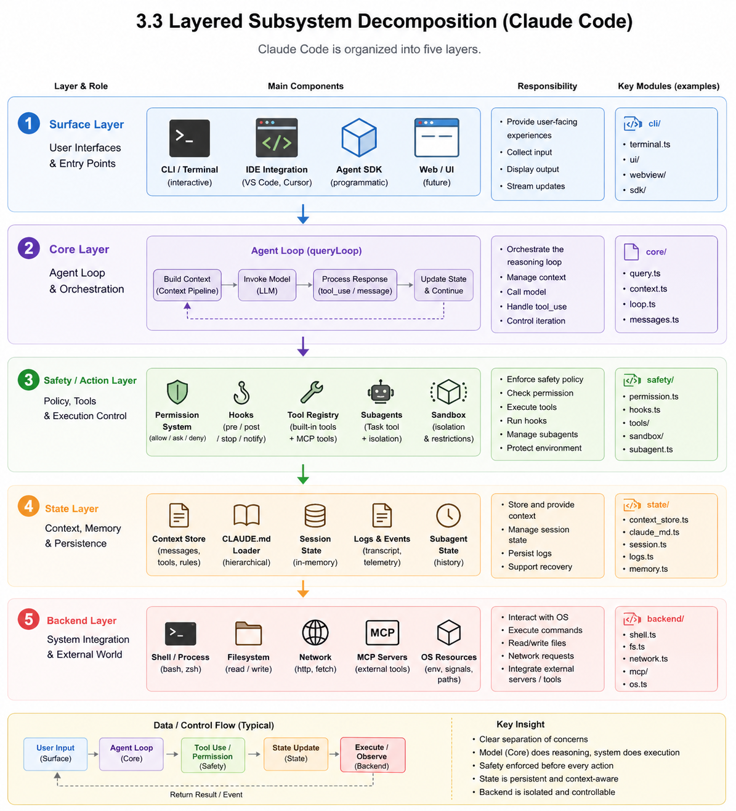
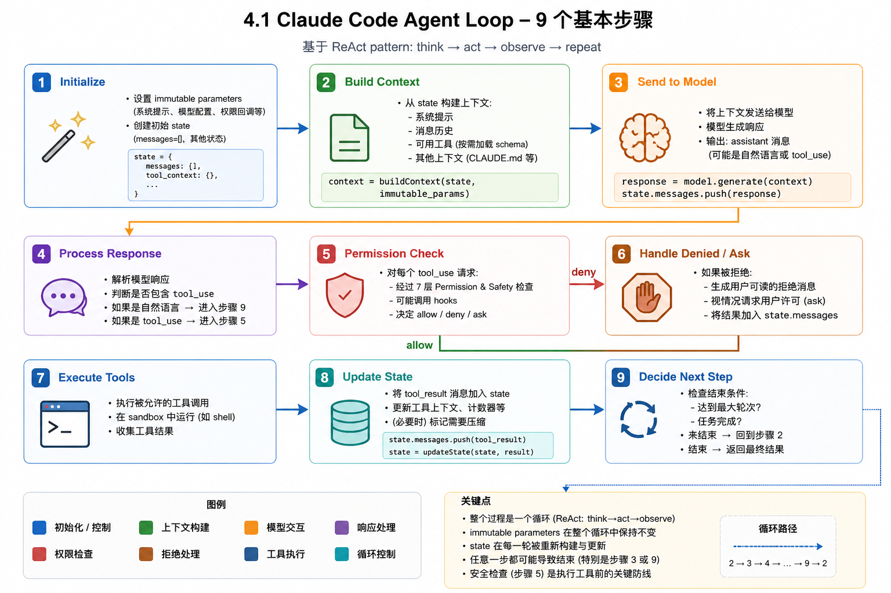
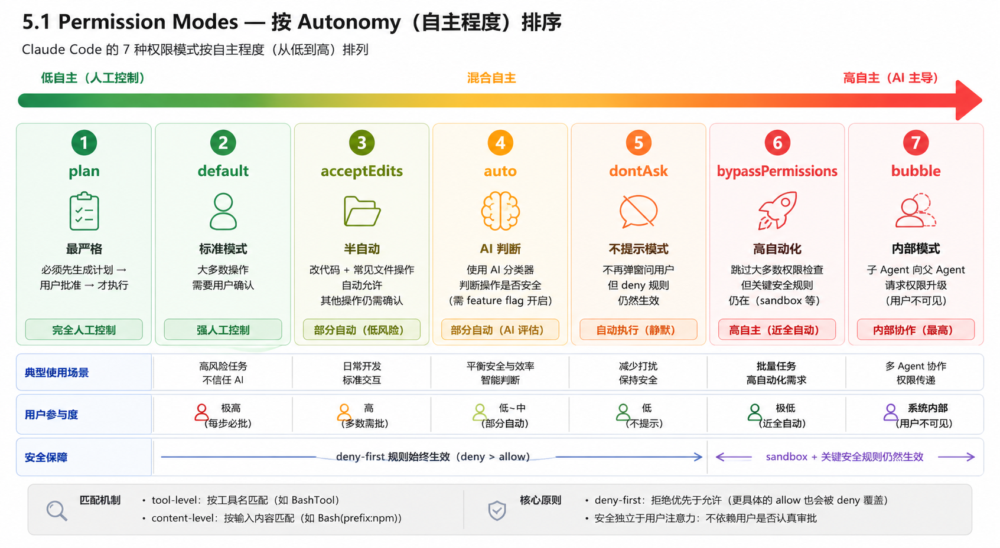

Paper Note
Dive into Claude Code
0. Overview

1. Introduction
2. Design Philosophies
2.1 Five Values
- Human Decision Authority
- Safety, Security, Privacy
- Reliable Execution
- Capability Amplification
- Contextual Adaptability
2.2 Design Principles
本节把前面的五个价值观落到 13 条设计原则 上。核心意思是： 生产级 Coding Agent 不是只靠模型能力，而是要回答一系列反复出现的系统设计问题， 例如：默认是否允许动作、权限如何升级、context 如何压缩、扩展机制如何组织、状态如何保存。
- Deny-first：未知或危险动作默认不放行，而是拒绝或升级给人类。
- Graduated trust：信任不是一次性给满，而是从严格到宽松逐步变化。
- Defense in depth：安全不靠单一机制，而是权限、hooks、classifier、sandbox 多层叠加。
- Externalized policy：策略不写死在代码里，而是通过配置、hooks、规则外部化。
- Context as scarce resource：把上下文窗口当成核心瓶颈，用渐进式压缩管理。
- Append-only state：状态主要以追加日志保存，方便审计、恢复、分支。
- Minimal scaffolding：不强加复杂规划图，让模型自由推理，系统负责执行与约束。
- Values over rules：不是死规则驱动，而是在确定性护栏内允许情境判断。
- Composable extensibility：MCP、plugins、skills、hooks 分层扩展，而不是一个统一接口解决所有问题。
- Reversibility-weighted risk：可逆/只读操作风险低，不可逆操作需要更严格控制。
- Transparent memory：用用户可见、可编辑、可版本控制的文件保存记忆。
- Isolated subagents：子 Agent 默认隔离上下文和权限，避免污染主任务。
- Graceful recovery：遇到错误时优先恢复、重试、降级，而不是直接崩溃。
作者还把 Claude Code 和三类替代路线对比：
- LangGraph 类：用显式状态图组织推理流程。
- SWE-Agent / OpenHands 类：主要依赖 Docker 等容器隔离。
- Aider 类：主要依赖 Git 回滚作为安全机制。
Claude Code 的独特组合是： 最小决策脚手架 + 分层策略控制 + deny-first 默认值 + 渐进式 context 管理 + 可组合扩展机制。
3. Architecture Overview
3.1 Design Questions and Running Example
1. Where does reasoning live?
核心：模型负责思考，系统负责执行。
- 模型不能直接访问文件、shell、网络
- 所有操作必须通过
tool_use接口 - 系统负责安全（sandbox / permission / deny-first）
关键 insight：
- Reasoning ≠ Execution
- Agent ≠ 模型，而是模型 + 系统
- 98% 是工程系统，不是 AI
2. How many execution engines?
核心：Claude Code 只有一个核心执行引擎：
queryLoop()。不同入口只是外层 UI / 调用方式不同。
| 入口方式 | 谁在用 | 有没有界面 | 典型用途 | 和执行引擎的关系 |
|---|---|---|---|---|
| Interactive Terminal | 人类用户 | 有 | 终端里对话、确认权限、查看流式输出 | 把用户输入包装成消息，交给同一个 queryLoop() |
| Headless CLI | 脚本 / 自动化程序 | 无 | 一次性命令调用，例如 claude -p "fix bug" |
跳过交互界面，直接把 prompt 投递给 queryLoop() |
| Agent SDK | 开发者 | 通常无 | 把 Claude Code 嵌入自己的应用或系统 | 通过 API 调用同一套 agent loop、权限和工具执行逻辑 |
| IDE Integration | 开发者 | 有 | 在 VS Code / Cursor 等编辑器里使用 | 编辑器只提供上下文和界面，底层仍走 queryLoop() |
3. Default Safety Posture
一句话：默认不信任（deny-first），并通过多层机制保障安全。
- 优先级：deny > ask > allow
- 未知操作：升级给用户（不自动执行）
- 多层防御：rules + hooks + classifier + sandbox
核心思想：
- 安全在执行前控制，而不是事后补救
- 任意一层都可以阻止危险操作
4. Binding Resource Constraint
一句话：Claude Code 的核心瓶颈是 context window。
- 模型能看到的信息是有限的
- 上下文过长 → 会被截断或丢失
解决方案：
- 5层压缩：budget → snip → micro → collapse → auto
- lazy loading（按需加载）
- deferred schemas（延迟工具）
- subagent summary（只返回总结）
3.3 Layered Subsystem Decomposition

4. Turn Execution: The Agentic Query Loop
4.1 The Query Pipeline

5. Tool Authorization and Control Boundaries
5.1 Permission Modes and Rule Evaluation

6. Extensibility
- MCP
- Plugins
- Skills
- Hooks
7. Context & Memory
Context is the main bottleneck. Managed with 5-layer compaction.
8. Subagents
Subagents run in isolated context and return summary only.
9. Persistence
Append-only JSONL logs enable resume, fork, rewind.
10. OpenClaw Comparison
Same design questions, different answers under different deployment contexts.
11. Discussion
Most complexity lies in system infrastructure, not model logic.
12. Future Directions
- Silent failures
- Long-term memory
- Governance
- Human capability preservation